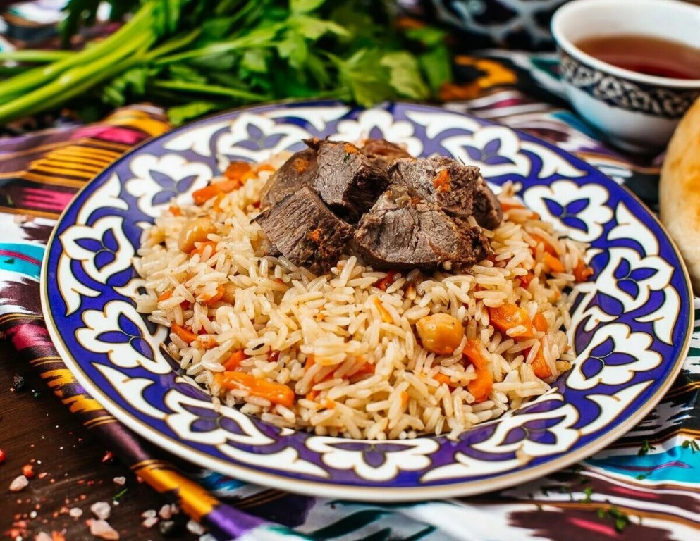

Плов

Узбекский плов со свининой
Домашний рецепт узбекского плова со свининой. Плов готовится в казане на плите.
Инредиенты
- Свинина (мякоть) – 600 г
- Рис для плова – 0,5 кг
- Морковь – 0,5 кг
- Лук репчатый – 3 шт.
- Чеснок – 2 головки
- Масло растительное – 100 мл
- Приправа к плову – 1 ч.л.
- Шафран – 1/2 ч.л.
- Куркума - 1 щепотка
- Перец острый стручковый – по вкусу
- Зира (семена) – по вкусу
Пошаговый рецепт
- Ставим на плиту казан.Разогреваем в казане растительное масло.
Одну луковку нужно пустить на предварительную обжарку. В произвольной форме нарезаем лук и обжариваем в кипящем масле. Лук извлекаем шумовкой. Масло хорошо раскалилось – идеальный вариант для приготовления плова.
- Пока разогревается казан и жарится лук, подготовим ингредиенты для зирвака. Свинину нарезаем кусочками.Морковь крупной соломкой или брусочками.Лук шинкуем четвертинками колец или крупными кубиками.
Мясо выкладываем в казан порционно и сразу с помощью шумовки начинаем переворачивать. Прожариваем до золотистости. Добавляем лук. Жарим с мясом. Добавляем морковь. Жарим с мясом и луком.
- Когда морковка начнет «гнуться», добавляем специи, соль и воду. Тушим зирвак на медленном огне около 30 минут.
В это время рис необходимо хорошо промыть.
- Добавляем рис. Распределяем до стенок казана.Рис необходимо «утопить» в воде на два пальчика вверх. Сюда же в рис идут зубчики чеснока в кожуре и по вкусу красный стручковый перчик.
Доводим рис до кипения на среднем огне. Варим 20 минут, а затем верхний слой риса слегка перемешиваем и собираем в горку.
- Закрываем плов крышкой. Готовим на очень медленном огне еще 15-20 минут. Плов уже как бы не варится, а пропаривается. Перед подачей перемешиваем.
Узбекский плов со свининой готов. В настоящем узбекском плове чеснок готовят в кожуре, а мясо выкладывают поверх риса.